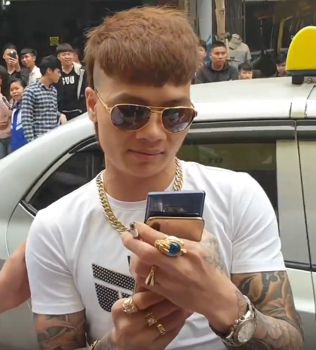

Ngô Bá Khá (sinh ngày 27 tháng 11 năm 1993), thường được biết đến với biệt danh Khá Bảnh, là một giang hồ mạng, YouTuber người Việt Nam. Anh nổi tiếng với các hình ảnh ăn chơi và đặc biệt là điệu múa quạt đã trở thành trào lưu của giới trẻ.
Sinh ra và lớn lên tại thành phố Từ Sơn, tỉnh Bắc Ninh, Khá Bảnh nhanh chóng thu hút được sự chú ý từ cộng đồng bởi những phát ngôn gây sốc và các video clip nội dung về cuộc sống, sinh hoạt cá nhân được anh đăng tải trên mạng xã hội. Khá Bảnh từng sở hữu một kênh YouTube với trên 2 triệu lượt đăng ký. Những video clip tuy được đông đảo các bạn trẻ đón nhận nhưng cũng gây phản ứng dữ dội từ cộng đồng vì chứa nhiều hình ảnh và hành vi bạo lực.
Ngày 2 tháng 4 năm 2019, Khá Bảnh bị công an tỉnh Bắc Ninh bắt giữ vì hành vi đánh bạc và tổ chức đánh bạc. Qua xét nghiệm, Khá dương tính với chất ma túy. Trước đó, Khá Bảnh cũng bị bắt nhiều lần vì tội cố ý gây thương tích hay gây rối trật tự công cộng.Ngay sau khi bị bắt giữ, kênh YouTube của Khá cũng đã bị khóa vì "vi phạm Điều khoản dịch vụ". Sau tuyên án, Khá Bảnh được đưa về thi hành án tại trại giam Hoàng Tiến ở thành phố Chí Linh, tỉnh Hải Dương.
Sự nổi tiếng của Khá Bảnh nói riêng và giới giang hồ mạng nói chung đã trở thành một đề tài tranh luận nóng hổi tại Việt Nam. Dù được một bộ phận người dân, đặc biệt là các bạn trẻ, đón nhận và xem như thần tượng, Khá Bảnh phải đối mặt với không ít chỉ trích vì những nội dung mà anh chia sẻ hay đăng tải được cho là gây ảnh hưởng xấu đến xã hội.
Ngô Bá Khá sinh ngày 27 tháng 11 năm 1993 tại phường Tam Sơn, thành phố Từ Sơn, tỉnh Bắc Ninh. Anh là con trai út và duy nhất trong một gia đình có 4 chị em, 3 chị gái đã lấy chồng. Mẹ là bà Nguyễn Thị Khánh (sinh năm 1956), bố – không rõ tên – đã qua đời từ năm 2010.
Khá từng theo học tại Trường Trung học Cơ sở Tam Sơn. Khi lên lớp 7, vì hoàn cảnh gia đình, Khá buộc phải thôi học. Tuy nhà trường đã tới nhà vận động nhưng không thể thuyết phục anh quay trở lại. Được biết, trong khoảng thời gian còn là học sinh, Khá chưa từng "gây gổ đánh nhau", mà chỉ vi phạm quy chế như "đi học muộn, nói chuyện trong lớp…" Sau khi bỏ học, Khá bắt đầu kiếm tiền với nghề làm mộc từ năm 14 tuổi. Sau đó, Khá trải qua nhiều công việc khác nhau. Năm 17 tuổi, do phạm tội đánh người và cố ý gây thương tích, Khá Bảnh phải vào Trại giáo dưỡng số 2 tại Yên Mô, Ninh Bình. Tại đây, Khá Bảnh tự hào vì đã trở thành thủ lĩnh của hơn 1000 học viên. Năm 2012, Khá Bảnh ra trại. Công việc của Khá chủ yếu liên quan đến vấn đề cho vay tiền. Theo lời tự thuật của Khá Bảnh, Khá chỉ đánh người khi người ta không trả nợ và không bao giờ lừa dối ai hay làm những việc như ăn trộm, ăn cắp.
Năm 2013, Khá Bảnh kết hôn với một người cùng xã, song đến năm 2017 thì hai người ly dị[10]. Liên tiếp trong hai năm 2014, 2016, Ngô Bá Khá bị công an thị xã Từ Sơn bắt giữ về hành vi cố ý gây thương tích và gây rối trật tự công cộng. Năm 2017, Khá Bảnh vào tù vì đánh người gây thương tích do liên quan đến việc đòi nợ.
Trong tháng 3 năm 2019, Khá Bảnh đăng ảnh dừng xe, cùng một nhóm thanh niên dàn hàng ngang chụp ảnh trên đường cao tốc Hà Nội – Hải Phòng lên trang Facebook cá nhân của mình. Ít ngày sau đó, Khá Bảnh đã được mời đến làm việc tại cơ quan công an và phải nộp khoản tiền phạt 5,5 triệu đồng đồng thời bị tước quyền sử dụng giấy phép lái xe trong thời hạn 2 tháng. Cuối tháng 3 năm 2019, Khá Bảnh đăng tải một video đốt xe lên trang YouTube cá nhân. Sau vụ đốt xe này, Khá Bảnh bị công an tỉnh Bắc Ninh triệu tập lên làm việc. Ngày 2 tháng 4 năm 2019, Khá Bảnh bị Công an tỉnh Bắc Ninh bắt giữ vì hành vi đánh bạc và tổ chức đánh bạc. Qua xét nghiệm, Khá có phản ứng dương tính với chất ma túy. Trước đó, Khá Bảnh cũng đã bị bắt nhiều lần vì tội cố ý gây thương tích.
Kênh YouTube của Khá Bảnh được tạo nên vào năm 2014. Tuy nhiên, đến năm 2018 thì kênh của Khá Bảnh mới thực sự nổi tiếng. Xuyên suốt trong các nội dung video, hình ảnh hay phát ngôn Khá Bảnh đưa lên mạng xã hội là "chân dung" về một "đại ca" trẻ tuổi, ăn mặc, nói năng dị hợm, có nhiều tiền bạc, có đông đàn em và những cuộc giao lưu với các "đại ca" khác trong giới "giang hồ".
Khá mỗi tháng nhận được 60–80 triệu đồng, có tháng lên tới 22.000 USD, tương đương khoảng 500 triệu đồng từ Youtube. Phần lớn những đoạn băng ghi hình của Khá Bảnh trên YouTube đều chứa những quảng cáo cho các loại hình bất hợp pháp như cá cược bóng đá, lô đề, xóc đĩa trực tuyến. Ngoài ra, có cả những thương hiệu nổi tiếng ở Việt Nam như Ngân hàng Hàng hải Việt Nam (MSB), Yamaha... đều xuất hiện trên video của Khá Bảnh. Một hãng xe điện thậm chí còn là nhân vật chính, xuất hiện trong cả video của Khá Bảnh thể hiện nội dung đốt xe ga để được tặng xe điện.
Cho đến ngày 2 tháng 4 năm 2019, kênh của Khá Bảnh đã đạt 2 triệu lượt đăng ký. Ngày 3 tháng 4 năm 2019, kênh này đã bị khóa, 1 ngày sau khi Khá Bảnh bị bắt
Ngày 2 tháng 4 năm 2019, Khá Bảnh đã bị Công an tỉnh Bắc Ninh bắt vì có dương tính với ma túy và tổ chức đánh bạc. Tại cơ quan điều tra, bước đầu Khá Bảnh tỏ ra ăn năn và thành khẩn khai nhận hành vi tổ chức đánh bạc. Khá Bảnh cũng thừa nhận trước khi bị bắt đã mua và sử dụng ma túy tổng hợp.
Ngày 3 tháng 4 năm 2019, Khá Bảnh bị Công an tỉnh Bắc Ninh đã truy tố hình sự vì hành vi đánh bạc trái phép.
Ngày 13 tháng 11 năm 2019, Toà án nhân dân thị xã Từ Sơn, Bắc Ninh tuyên phạt Khá Bảnh mức án 10 năm 6 tháng tù (cụ thể, 4 năm tù về tội "đánh bạc", 6 năm 6 tháng tù về tội danh "tổ chức đánh bạc").
Ngày 20 tháng 12 năm 2020 có tin đồn Khá Bảnh chết trong trại giam. Đại tá Lê Ngọc Châu, giám đốc Công an tỉnh Hải Dương, khẳng định tin đồn này là không chính xác. Người thân Khá Bảnh cũng bác bỏ thông tin này.
Ông Nguyễn Trí Tài, đại diện kênh FAP TV, cho rằng "Những bạn trẻ đang còn ngồi trên ghế nhà trường, bị quản thúc bởi nhà trường và xã hội, do đó hình ảnh Khá Bảnh giúp họ thoả mãn tính nổi loạn trong tư tưởng".
Tiến sĩ Khuất Thu Hồng, Viện trưởng Viện Nghiên cứu phát triển xã hội cho biết: "Hiện tượng Khá "Bảnh" là minh chứng cho sự thất bại của giáo dục trong việc dạy học sinh những điều tốt đẹp. Bởi những thông điệp từ nhà trường, gia đình, xã hội với các em đều máy móc, không truyền cảm hứng để người trẻ hướng đến những giá trị tích cực".
Bà Nguyễn Phương Linh – Viện trưởng Viện Nghiên cứu quản lý phát triển bền vững (MSD), cũng cho rằng "hiện tượng Khá Bảnh không phải là mới. Điều đáng lo ngại là những nhân vật được xây dựng theo hình tượng xã hội đen gần đây có vẻ không còn là đơn lẻ, tự phát nữa mà bắt đầu phát triển thành xu hướng cổ xúy cho những thứ lệch chuẩn và thậm chí là các hành vi vi phạm pháp luật."
Trả lời BBC, ông Trần Quốc Quân hiện sống tại Warsaw, Ba Lan, tác giả các tiểu thuyết về xã hội, cho rằng: "Hệ thống công quyền lôi ngay ra tội cũ của Khá Bảnh dễ như quan tham thò tay vào túi rút tiền. Hiện tượng Khá Bảnh là "nguy hại" cho xã hội, nhưng "hình sự hóa một vấn đề đạo đức xã hội hay để chiều lòng dư luận là không nên chút nào."
Vào tháng 3 năm 2019, khi trả lời câu hỏi tại cuộc họp báo Chính phủ, Bộ trưởng, Chủ nhiệm Văn phòng Chính phủ Mai Tiến Dũng nêu quan điểm: "Những hiện tượng như Khá Bảnh là vấn đề cực kỳ không tốt, rất nguy hiểm cho giới trẻ hiện nay. Trong phiên họp thường kỳ Chính phủ hôm nay, Thủ tướng đã có ý kiến rất gắt gao đối với Bộ TT&TT liên quan đến quản lý mã độc, thông tin xuyên tạc, không đúng sự thật, phản cảm, tục tĩu. Những trường hợp như thế này không thể chấp nhận được trong một xã hội lành mạnh."